地政学
キーウは独立国家の首都であり、ロシアの侵攻に対する政治、軍事、外交、情報発信の中心です。大使館、政府庁舎、地下鉄、橋、発電施設が安全保障と生活を結びます。市民の判断も国際政治と日々深くつながります。
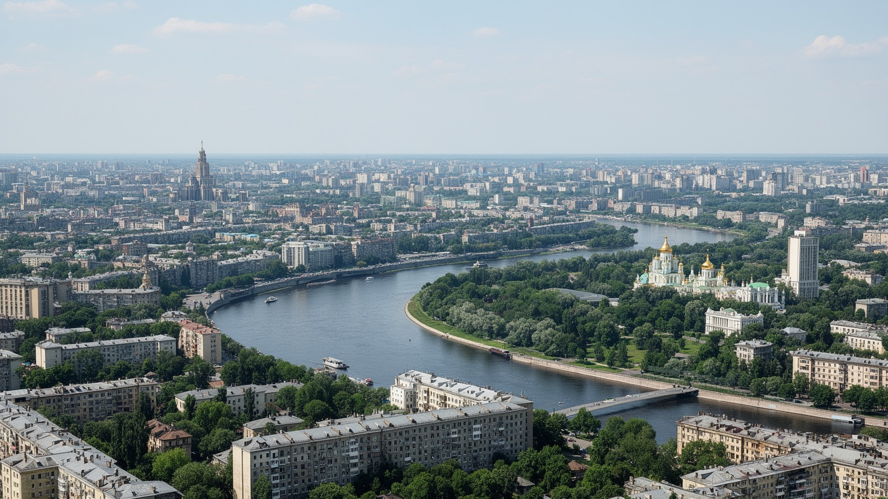
🇺🇦 ウクライナ / ヨーロッパ / World City Atlas
ドニプロ川の丘に広がるウクライナの首都。国家形成、宗教遺産、戦時の都市運営、ITと生活文化が重なる都市です。
都市の骨格
キーウはドニプロ川の高い右岸と住宅の広がる左岸を橋と地下鉄で結び、官庁、修道院、大学、IT企業、避難空間、追悼の広場を同じ生活圏に置いています。
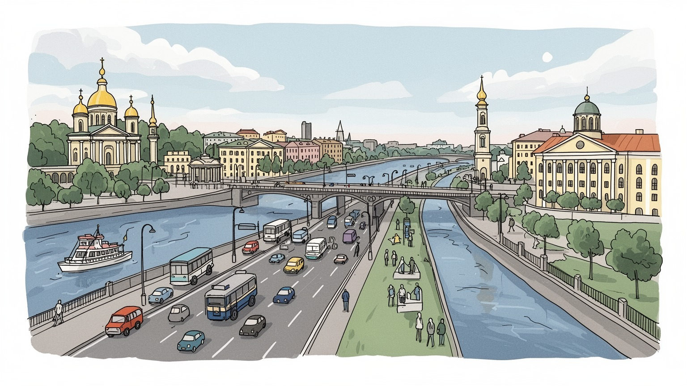
キーウは独立国家の首都であり、ロシアの侵攻に対する政治、軍事、外交、情報発信の中心です。大使館、政府庁舎、地下鉄、橋、発電施設が安全保障と生活を結びます。市民の判断も国際政治と日々深くつながります。
行政、銀行、IT、大学、通信、メディア、物流、軍需関連の仕事が集まります。戦時の停電、動員、避難、遠隔勤務が働き方を変え、現場労働の負担も増しています。復旧、介護、小売の仕事も街の基盤を支えています。
聖ソフィア大聖堂、ペチェールシク大修道院、ウクライナ語文化、劇場、文学、民俗音楽が重なります。信仰は国家意識、帝国記憶、家族の祈りと深く結びます。追悼と祝祭が広場や教会に残る都市です。今も大切です。
住民は地下鉄、集合住宅、市場、公園、川岸、カフェ、避難警報のリズムで暮らします。観光は修道院と街歩きに加え、戦時の追悼と復興の現実を読む旅になります。食卓、写真、寄付も訪問の意味合いを今も変えます。
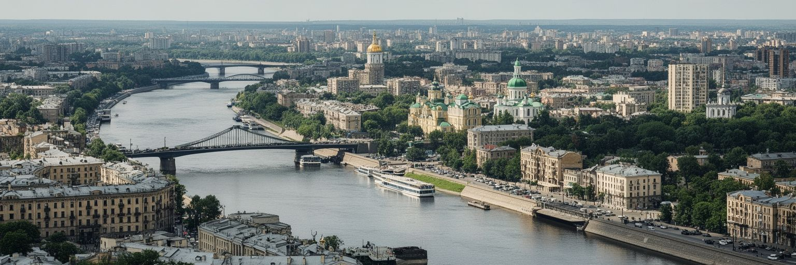
キーウの地形は、ドニプロ川の高い右岸と広い左岸を対比して見ると理解しやすくなります。古い政治と宗教の中心は右岸の丘に重なり、聖ソフィア大聖堂、黄金の門、ペチェールシクの修道院、官庁街、独立広場が歴史の層を作ります。左岸は二十世紀以降に住宅地と工業地が広がり、橋、地下鉄、幹線道路によって毎日の通勤圏へ組み込まれました。川は景観だけでなく、防衛、物流、発電、水道、避難、復旧を考える軸でもあります。戦時には橋や発電施設の安全が都市生活に直結し、停電や交通規制は家庭、病院、学校、企業の時間割を変えます。一方で、川沿いの島、公園、砂浜、遊歩道は、緊張の中で住民が息をつく場所です。キーウを読むには、丘の上の記念碑だけでなく、橋を渡る通勤者、地下鉄駅へ向かう家族、川辺で休む若者の動きを重ねる必要があります。都市の力は、地形に守られながら、同時に地形に制約されてきた歴史から生まれています。右岸の坂道や石畳は中世から近代までの記憶を残し、左岸の団地や新しい商業施設は人口増加と生活の現実を示します。川はこの二つを分ける境界であり、結び直す公共空間でもあります。水面を眺める穏やかさと、橋を守る緊張が同時にあることが、キーウの地理を特別にしています。冬の凍る水面と夏の緑地も、季節ごとの都市感覚を作ります。街の距離も変えます。
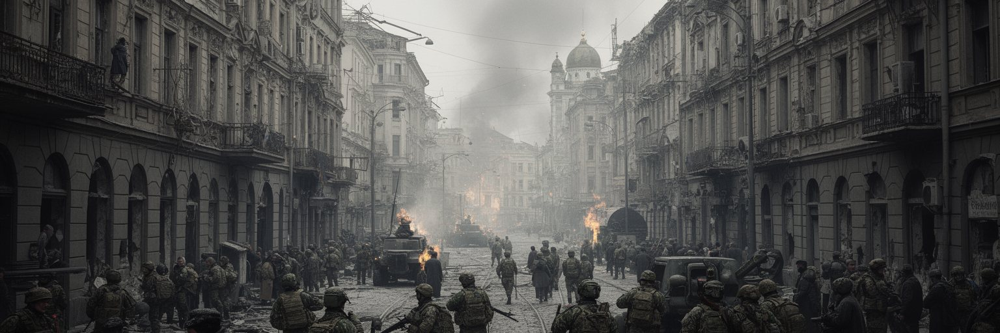
キーウはウクライナ国家の政治的な中枢であり、ロシアによる全面侵攻後は、国内統治、国際支援、軍事調整、外交報道、復興計画が集中する戦時首都になりました。大統領府、議会、政府機関、大使館、国際機関、報道拠点は、警備と日常の交通が交差する街路に置かれています。空襲警報が鳴れば地下鉄駅や地下通路が避難空間になり、停電が起きれば発電機、通信回線、暖房、病院の備えが都市の生命線になります。国家の意思決定は抽象的な制度ではなく、橋、発電所、学校、住宅、行政窓口を守る具体的な仕事として現れます。戦争は都市を前線そのものにするだけでなく、離れた前線を支える後方の労働、医療、物流、寄付、情報発信を増やします。キーウの住民は危険に慣れすぎないようにしながら、仕事、学習、買い物、葬儀、結婚、子育てを続けています。首都の強さは、危機を劇的に語ることではなく、行政と生活を止めない持久力にあります。政治的な象徴性が高いほど攻撃対象にもなりやすく、警備と開かれた都市生活の両立は難しくなります。広場の集会、兵士の追悼、支援物資の仕分け、国際代表団の訪問は、国家が市民の近くで動いていることを示します。戦時のキーウは、都市が国家を支え、国家が都市の生活を守る相互依存を可視化しています。首都であることは、危機を世界へ説明する責任も伴います。
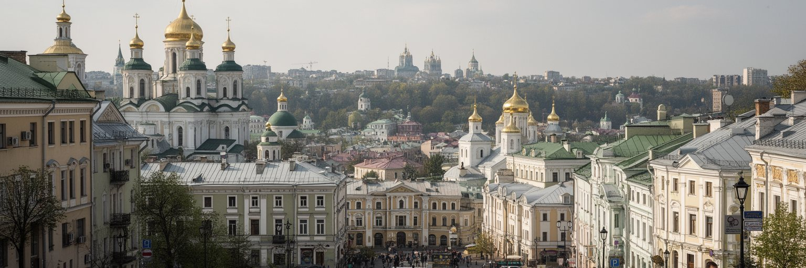
キーウは東スラヴ世界の宗教史を考えるうえで重要な都市です。聖ソフィア大聖堂やキーウ・ペチェールシク大修道院は、信仰の場所であると同時に、ルーシ以来の国家形成、文字文化、修道制、美術、帝国支配、独立後の宗教政治を読む入口です。黄金のドームや地下洞窟の聖遺物は観光資源として知られますが、住民にとっては祈り、追悼、家族の儀礼、戦死者への思いとも結びます。ウクライナ正教会をめぐる教会組織の帰属、ロシア正教会との距離、国家と言語の問題は、宗教が純粋な私的信仰だけではないことを示します。礼拝堂、鐘の音、墓地、修道院の壁は、戦争と独立をめぐる記憶を静かに受け止めます。キーウの宗教遺産を読むには、美しい建築を鑑賞するだけでなく、誰がその歴史を語り、どの言語で祈り、どの帝国の物語から距離を取ろうとしているのかを見る必要があります。宗教施設は観光客に開かれながら、同時に住民の精神的な避難所でもあります。戦時には、祈りの場が物資支援や追悼、避難者の相談の場になることもあります。正教会の儀礼に加え、カトリック、ユダヤ教、イスラム教、プロテスタントの共同体も都市の生活を支えます。多様な信仰の存在は、キーウが単一の神話だけでできていないことを教えます。聖地であることは、過去を守る責任と、現在の政治的な選択を引き受ける責任の両方を意味します。
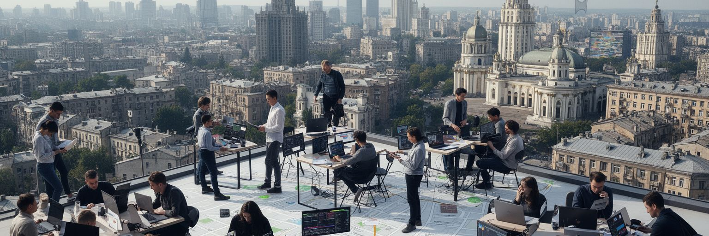
キーウの経済は、行政と公共機関だけでなく、IT、銀行、通信、教育、医療、メディア、物流、建設、小売、軍需関連の仕事に支えられています。ウクライナのIT人材は国際的なアウトソーシングやスタートアップで知られ、戦時にも遠隔勤務、サイバー防衛、寄付プラットフォーム、行政サービスのデジタル化を進めてきました。首都には大学、技術者、英語を使う専門職、投資家、法律事務所、デザイン職が集まり、国内外の市場とつながります。しかし都市を動かす労働は画面の中だけではありません。地下鉄、バス、清掃、電力復旧、病院、倉庫、配送、食品店、学校、修理工場、避難所運営が日々の生活を支えます。空襲警報や停電は、会議の予定だけでなく、夜勤、保育、通院、冷蔵設備、インターネット接続まで揺らします。高技能職が海外収入を得る一方、現場労働者は物価上昇、動員、家族の避難、住宅被害と向き合います。キーウの産業を読むには、デジタル国家の前進と、都市を止めない手仕事を同時に見る必要があります。戦時の需要は新しい雇用を生みますが、心理的な疲労や技能の流出も深刻です。企業は発電機や衛星通信を備え、従業員の安全確認を仕事の一部にしました。労働は収入を得る手段であるだけでなく、都市が平常性を保つための社会的な行為になっています。そこに誇りがあります。
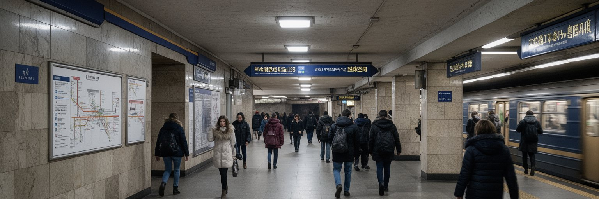
キーウ地下鉄は、通勤通学の骨格であり、戦時には避難空間としても重要な役割を担います。深い駅、長いエスカレーター、地下通路、ホームは、平時には都市の移動を効率化し、空襲警報時には人びとを地上の危険から遠ざけます。地下鉄は右岸と左岸を結び、中心部、大学、住宅地、市場、駅、行政地区を日常の時間でつなぎます。戦時には列車の運行、避難者の滞在、子ども連れの安全、情報提供、衛生、電力供給を同時に管理しなければなりません。駅に座る人、携帯電話を充電する人、仕事のメールを送る人、子どもをなだめる人の姿は、都市の非常時が生活の延長にあることを示します。一方で、地下鉄に近い地域と遠い地域では避難しやすさが異なり、高齢者、障害者、小さな子どもを連れた家庭には移動の負担が大きくなります。公共交通は便利さだけでなく、公平な安全を提供できるかを問われます。キーウの地下空間を読むことは、都市インフラがどれほど多目的に使われるかを見ることです。駅名や路線は都市の記憶を刻み、ホームは日常と危機の境界を曖昧にします。地上の街路が警報で止まっても、地下には人の気配と小さな秩序が残ります。避難を支える交通機関は、戦時都市の最も身近な公共財です。地下鉄が動くことは、都市がまだ生活を続けているという強い合図でもあります。音も記憶になります。
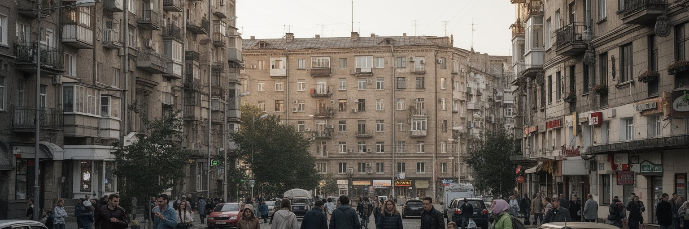
キーウの日常は、ソ連期の集合住宅、新しい高層住宅、古い中庭、郊外の団地、修理中の建物、発電機の音、暖房と水道の心配に支えられています。住民は警報アプリを確認し、停電予定に合わせて洗濯や仕事を調整し、地下に降りる準備をしながら買い物、学校、通院、介護を続けます。戦争は住まいを単なる私的空間ではなく、避難、通信、暖房、近所の助け合いが集まる小さな拠点に変えました。窓の補修、階段室の明かり、エレベーター停止、発電機の燃料、ペットの避難、子どものオンライン授業は、都市の生活を細かく左右します。国内避難民の流入や家族の国外避難は、住宅需要と共同体の形を変えました。家族が離れて暮らす人も多く、住宅は記憶と不在を抱える場所でもあります。カフェやコワーキングスペースは、停電時の仕事場や充電場所として使われ、商業空間が公共性を帯びる場面もあります。キーウの暮らしを読むには、破壊の映像だけでなく、住民が日々の小さな手順を作り直す力を見る必要があります。戦時の日常は英雄的な瞬間だけでできていません。買い物袋、子どもの宿題、薬の受け取り、隣人への連絡、暖かい食事を確保する反復から成り立っています。住宅政策と復旧は、建物の修理だけでなく、失われた安心と近隣関係をどう戻すかという課題でもあります。そこに生活の粘りがあります。
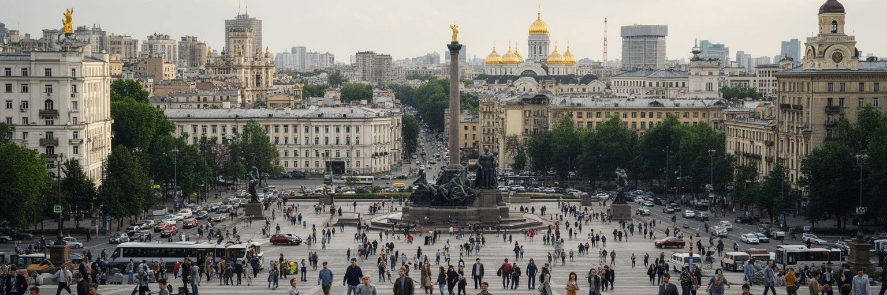
キーウの文化は、劇場、美術館、文学、映画、民俗音楽、現代アート、カフェ、大学、独立系メディア、市民運動が近距離で交わるところにあります。独立広場は買い物や待ち合わせの場所であると同時に、オレンジ革命、ユーロマイダン、追悼、抗議、国旗、花、写真が重なる政治的な記憶の場所です。広場に立つことは、国家と市民の関係を身体で感じることでもあります。文化施設は戦時にも公演、展示、朗読、募金、避難者支援を続け、芸術は悲しみを共有し、国際社会へ経験を伝える言語になりました。ウクライナ語の使用、ロシア語文化との距離、翻訳、出版、学校教育は、文化が国家の選択と結びつくことを示します。街の壁画、即席の追悼場所、兵士の写真、破片を使った展示は、戦争の記憶を都市空間に刻みます。一方で、文化は常に重いものだけではありません。音楽、食、ファッション、ユーモア、夜の会話、学生の議論は、都市が生きていることを示します。キーウの広場と文化を読むには、記念碑の意味だけでなく、そこに集まる人の声、沈黙、怒り、笑いを聞く必要があります。市民社会は制度の外で生まれるだけでなく、日々のボランティア、寄付、情報共有、近所の助け合いとして続きます。広場は国家の象徴である前に、人びとが自分の都市を取り戻そうとする場です。記憶は今も更新されます。
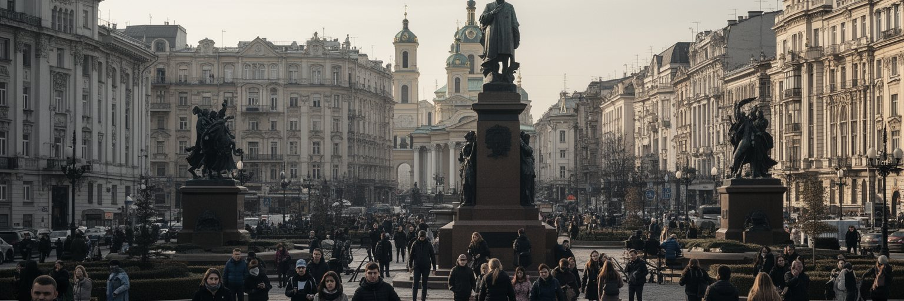
キーウ観光は、聖ソフィア大聖堂、ペチェールシク大修道院、アンドリーイウシキー坂、黄金の門、独立広場、ドニプロ川岸、市場、カフェを巡る街歩きから始まります。丘の上の教会、石畳の坂、古い商店、地下鉄の深い駅は、都市の長い時間を体で感じさせます。しかし現在のキーウを旅することは、古都の美しさを消費するだけではありません。追悼の旗、戦死者の写真、破壊された建物の記憶、避難者の話、復旧工事、寄付箱、空襲警報の表示が、観光の視線に倫理を求めます。訪問者は写真を撮るだけでなく、どの場所が今も誰かの生活や喪失と結びついているかを考える必要があります。観光業はホテル、案内、交通、飲食、土産物、文化施設の雇用を支えますが、戦時には安全確認、保険、移動制限、夜間外出の制約も伴います。キーウの魅力は、修道院と川の景観、カフェ文化、建築、博物館が豊かなことに加え、住民が困難の中で公共空間を保とうとしている点にあります。旅は都市を応援する行為にもなり得ますが、痛みを見世物にしない慎重さが必要です。街歩きの価値は、名所を数えることではなく、歴史、信仰、戦時生活、復興への意思が同じ道に重なることを理解することにあります。キーウでは観光と追悼が切り離せず、訪問者の態度も都市の尊厳を左右します。静かな配慮も旅の一部です。
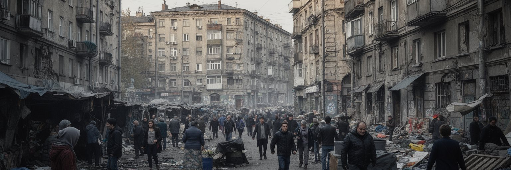
キーウには、戦争による住宅被害、国内避難民の受け入れ、物価上昇、医療と心理支援の需要、動員による家族の分断、障害を負った兵士と民間人のケア、教育の中断、高齢者の孤立が重なっています。首都は比較的多くの雇用と公共サービスを持つため人を引き寄せますが、その分、家賃、学校、病院、交通、行政手続きへの負荷も増えます。国外に避難した家族と市内に残る家族、前線にいる家族、帰還した人、戻れない人の間には、見えにくい感情の距離が生まれます。戦時の連帯は強い一方、疲労、怒り、喪失、将来不安は家庭や職場に蓄積します。復興資金や国際支援が集まる都市では、透明性、腐敗防止、公平な配分、弱い立場の人へのアクセスが重要になります。新しい道路や建物を作るだけでは、生活の傷は癒えません。学校の安全、リハビリ、手話やバリアフリー、心のケア、失業者支援、子どもの遊び場、女性の安全が復興の中身になります。キーウの社会問題を読むことは、戦争の被害を数字で見るだけでなく、誰が手続きにたどり着けず、誰が声を上げにくいのかを考えることです。都市の強さは、象徴的な建物の復旧だけでなく、疲れた住民が支援を受けられる制度に表れます。連帯を長く続けるには、英雄的な語りだけでなく、休息と不満を認める公共性も必要です。支援の届き方が問われます。
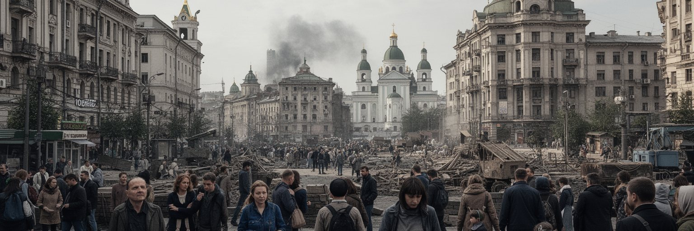
キーウの復興は、壊れたものを元に戻すだけではありません。住宅、橋、発電、上下水道、学校、病院、文化財、公共交通、デジタル行政、防空、緑地をどの順序で更新するかが、戦後の都市形態を決めます。短期的には安全と生活再開が優先されますが、長期的には無秩序な高層開発、車依存、歴史地区の商業化、川岸の私有化をどう防ぐかも問われます。国際支援や民間投資は必要ですが、住民の意見が弱ければ、復興は都市を使う人より資本の論理を優先してしまいます。バリアフリー、断熱、省エネ、避難しやすい地下空間、分散型エネルギー、学校と公園の安全、公共住宅の整備は、次の危機に備える都市政策です。文化財の修復は過去を保存するだけでなく、ウクライナの歴史を誰の言葉で語るかという問題でもあります。キーウは古い丘の街とソ連期の大規模住宅地、新しい商業開発を抱えており、復興はこの複雑さを整理する機会にも危険にもなります。美しい中心部だけを整えて周縁の生活を後回しにすれば、都市の分断は深まります。復興の成功は、完成した建物の数ではなく、住民が安全に通い、働き、祈り、休める範囲が広がるかで測る必要があります。戦争後の都市を作る作業は、今すでに始まっています。公開された計画、住民参加、予算の透明性がなければ、復興への信頼は育ちません。新しい街路は記憶も運ぶ必要があります。
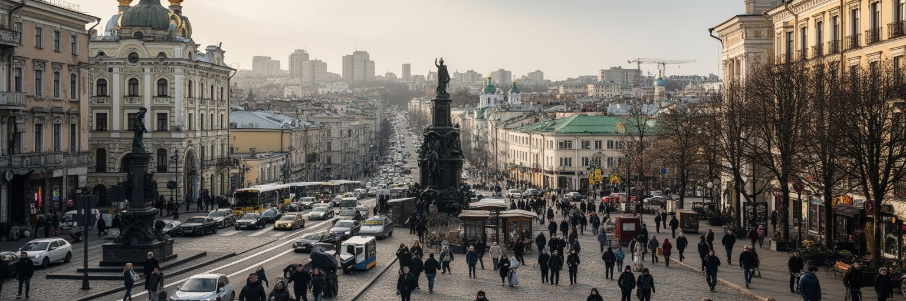
キーウは、古代ルーシの記憶、正教会の聖地、ウクライナ国家の首都、戦時の行政中枢、ITと市民社会の拠点、ドニプロ川沿いの生活都市という複数の顔を持っています。丘の上の修道院、独立広場、地下鉄のホーム、左岸の集合住宅、川辺の公園、発電機のある店先、大学の教室、避難者を受け入れる施設は、別々の風景ではなく一つの都市の持久力を示します。キーウを経済規模だけで見ると、国家を支える行政とデジタル産業、戦時物流、国際支援の厚みを見落とします。宗教遺産だけで見ると、住民が警報と停電の中で日常を作り直している現実が見えません。戦争だけで見ると、都市の食、音楽、冗談、学び、恋愛、散歩、祈りの柔らかさを失います。必要なのは、危機と普通の生活を同時に読む視点です。キーウの強さは、破壊に耐える硬さだけではなく、壊れた予定を組み直し、隣人に連絡し、公共空間を使い続ける柔軟さにあります。都市は国家の象徴でありながら、最終的には住民の小さな反復で保たれます。ドニプロ川の眺め、金色のドーム、深い地下鉄、追悼の旗を同じ地図に置くと、キーウは過去の記念碑ではなく、現在進行形で自由と生活を守る都市として見えてきます。世界都市としての重要性は、その持久力を世界がどう支えるかにもかかっています。読む側にも、長く見続ける責任があります。